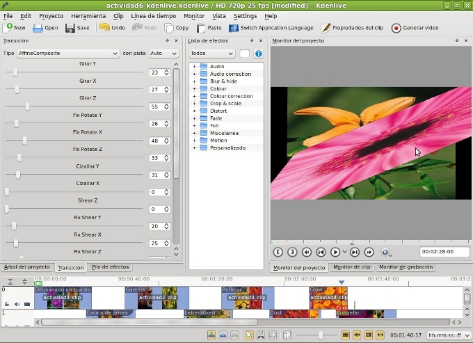
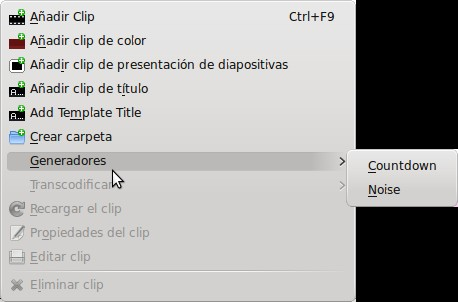

2.2. Actividad Práctica
Aspectos previos:
Para el desarrollo de la presente actividad podemos utilizar proyectos guardados en el formato nativo de Kdenlive. Ejemplo: utilizar la Actividad4_kdenlive referida al uso de efectos en nuestras ediciones.
En caso de iniciar un proyecto nuevo (o utilizar el anterior) debemos dotar a nuestro proyecto de varias consideraciones que no disponía, bien nuestro proyecto original y, obviamente, no dispondrá un proyecto nuevo.
Nuestro proyecto ha de contar con 3 pistas de video y 1 de audio. En nuestro árbol de proyectos debemos contar con varios clips de video (mínimo 3) o, en su defecto, un clip fragmentado en, al menos, cinco partes.
ACTIVIDAD 6 - TRANSICIONES
1. Abre el proyecto actividad4_kdenlive.kdenlive o genera un proyecto nuevo.
2. Añade las pistas necesarias a nuestro proyecto. Menú Proyecto /pistas / añadir pista
- Insertaremos pistas de audio y video debajo de las actuales.
Nota: Recuerda disponer de 3 pistas de video, una de audio, varios clips o fragmentos y un clip de título.
3. El montaje de nuestra edición podría ser parecido al de la imagen.
4. Añade diversas transiciones a cada uno de los fundidos o pase entre clip y clip.
5. Aplica entre los dos últimos clips de video la transición Affinecomposite. Modifica los diversos valores hasta descubrir un efecto llamativo y dinámico. Esta transición es parecido a los efectos de Crop & Scale y la mezcla con la transición composite.
 6. Desplaza todo el contenido de las pistas en la línea de tiempo y agrega un generadorde cuenta atrás y lo colocamos al inicio de la línea del tiempo.

La duración de nuestra cuenta atrás es de 10 segundos. Indicaremos el fichero de video donde lo generamos (1), el tiempo de la cuenta atrás (2) y el tramaño de la fuente (3).
7. Una vez aplicados efectos y transiciones a los diferentes clips obtendremos un resultado final de nuestro video.
8. Guarda el proyecto como Actividad6_kdenlive.
9. Genera un video con el perfil y el formato que más os guste.
Jo.R.C.A. 2004 - 2011

Edición de Audio y Video con Software Libre by José Ramón Cerdeira Alonso is licensed under a Creative Commons Reconocimiento-No comercial-Compartir bajo la misma licencia 3.0 España License